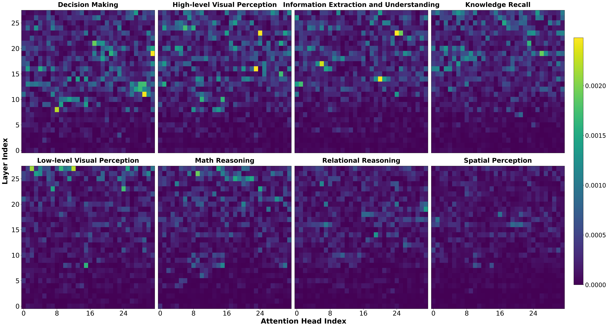
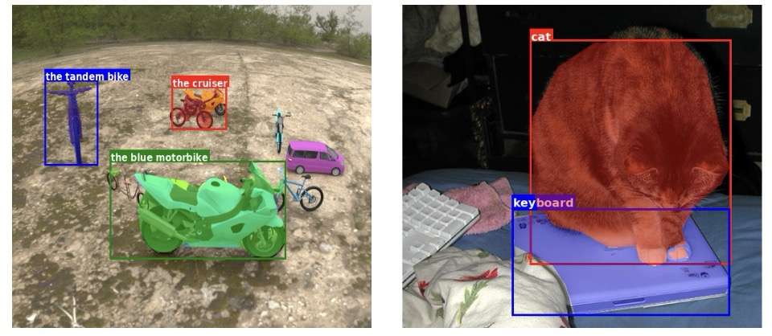
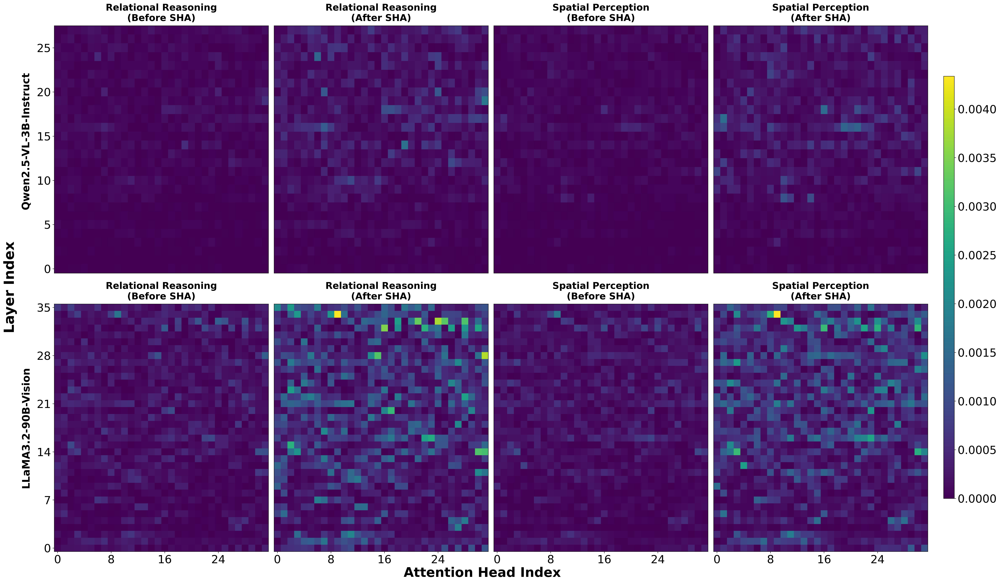

论文笔记：Attention in Space: Functional Roles of VLM Heads for Spatial Reasoning（Pro）
论文笔记：Attention in Space: Functional Roles of VLM Heads for Spatial Reasoning（Pro）
1. 背景信息
作者来自墨尔本大学、澳大利亚国立大学、复旦大学和蒙纳士大学，Xueqi Ma 与 Shuo Yang 共同一作。本文版本为 arXiv:2603.20662v1，2026-03-21；该版本未给出会议录用信息。来源为官方全文与官方 PDF，数字和公式按 PDF 核对。
这篇最值得读的是把功能标签探针接上实际头消融：先找到能辨认空间子任务的头特征，再验证压低这些头的输出是否损害回答。它提供了候选组件影响行为的证据；把这些组件解释为专门的认知模块，还需要更强的功能选择性对照。研究对象是 VLM 语言模型部分的头输出向量，不只是注意力权重落在什么图像区域。
2. 关键问题：认得狗和马，为什么仍可能判断错“狗是否朝向马”？
Golden Case — 问题是什么？
Table 1 要求判断 “The dog is facing the horse.” 的真伪。图中狗在右、马在左，狗头朝左，正确答案是 True。作者拆出五步：①图里是什么动物？狗和马；②狗相对马在哪？右侧；③狗头朝哪？左；④这个朝向是否指向马的位置？Yes；⑤原句是真是假？True。
五步标签依次是高层视觉感知、空间感知兼高层视觉感知、空间感知兼高层视觉感知、关系推理、决策。识别动物、读取位置与朝向、整合关系是不同操作，但任何一步出错都可能只表现为最终真伪判断错误。
此前视觉 grounding 研究主要定位图文对齐和目标关注的头，作者进一步问：复杂空间题中，能否找到与这些不同操作相关、并实际影响回答的头？CogVSR 用带功能标签的子问题把这个问题变得可测（§2、§4）。这条五步链是外部模型根据已知答案生成、经人工审核的任务分解，原文没有证明目标 VLM 自由推理时也按这条链执行。
3. 关键方法：从答案 token 的头输出预测功能，按归因选头，再干预模型
Golden Case — 方法怎么跑？
仍看狗和马。在回答“狗头朝哪”时，目标 VLM 接收图像、当前子问题，以及前两步子问题和它们的正确答案；当前答案仍由模型自行生成。若当前回答正确，研究者提取关键答案 token 的各层头输出，平均并拼接本层平均表示。这条记录与其他答对子问题共同训练功能分类器；分类器归因最后产生每种功能的头重要性图和候选头集合。随后在测试题上抑制选定集合，与等量随机头比较损害程度（§5、§6.2）。
这解释该例怎样进入研究流程。Table 1 没有报告狗马单例的逐头分数或干预前后答案；候选集合由许多样本汇聚得到，也不是每条测试题临时训练一次探针。
3.1 探针读什么，重要性又是谁的梯度？
提供正确历史会隔离此前错误的传播；作者只保留当前回答正确的激活用于训练和评估探针（§5.1–5.2）。因此分析针对成功完成子操作的条件，不能直接代表自然自由 CoT 或失败时的完整电路。
Gemini2.5-Flash 从生成答案中选出最重要的 $k=3$ 个 token。设 $x_l^h(t)$ 是第 $l$ 层、第 $h$ 个头在 token $t$ 处投影到 residual stream 的输出，$H$ 为每层头数：
第一项保留某头在答案关键语义位置的输出，第二项补入层深相关的整体状态。所有头的 $z_l^h$ 经共享线性层降到 64 维，再拼接进入隐藏层 512 维的 MLP；仅训练探针，VLM 权重保持不变。附录 §12 给出 ReLU、dropout 0.3、Adam、学习率 $10^{-4}$、100 epochs。主文写 multi-label，Table 1 也有双标签，附录却写 multi-class 和 cross-entropy；实际标签编码与损失实现未澄清 [?]。
功能 $c$ 的头重要性使用 gradient × activation（Eq. 4）：
$j$ 表示层与头的组合索引，$\bar x_j$ 在该式中指上述头输入特征，$\hat y_c$ 是功能分类器的 logit。梯度回答的是哪些特征帮助探针辨认标签，而非哪些头提高 VLM 正确答案的概率。作者报告 Qwen7B 功能标签测试 accuracy 为 82.15%（Table 7）；其多标签计分口径未清楚说明 [?]，该分数也不是因果定位准确率。

原文 Figure 2（PDF p.5）：横轴为头，纵轴为层，颜色是探针归因分数。重点看右下角空间感知和相邻关系推理，亮点比高层视觉等功能少。§6.1 按 importance > 0.001 统计，八功能高分头合计少于 9%，空间与关系各不足 1%；这是阈值下的分数分布，不能直接解释为空间能力的资源上限。
每个头输入都含同层共享均值，归到某个头的分数也可能利用其他头的层级信号；原文没有拆开 head-only 与 layer-only 的贡献。因而热图首先是候选定位结果。关键 token 的具体选择 Prompt、token 对齐和头输出 hook，以及下一步 elbow 的算法和实际头列表，仍是复现缺口 [?]。
3.2 从候选定位到行为检验：抑制与增强是两种操作
消融选头采用各功能 importance 降序曲线的 elbow 之前的头（§6.2、Figure 14），与上面统计稀疏性的 0.001 阈值是两套规则。负干预将选定头输出缩小，即 $x_l^h\leftarrow\epsilon x_l^h$；正文举 $\epsilon=0.001$ 为例，未把它明确写成所有实验的固定值（Eq. 5 的文字定义）。再抑制等数量随机头作为对照，检验排序找到的集合是否更影响目标功能。
正干预则在 CogVSR 上取同类任务答对与答错样本的激活均值差（Eq. 6、§6.5）：
$\sigma_l^h$ 是沿该方向的激活标准差，所有数据集用 $\alpha=0.1$；下游同时增强空间感知与关系推理头。直觉是向答对样本的激活状态移动，但这个方向也可能带入难度、置信度或答案表达信号。方向统计使用哪个切分、是否单位化及在哪些 token 上施加，原文未交代充分 [?]。
3.3 SHA 改的是视觉输入，给模型额外物体线索
另一条探索是 SHA：正文称 Spatial Head Activation，附录称 Spatial Head Augmentation。Gemini2.5-Flash 给相关对象提供框、实例 mask 和对象名，再把这些线索加到图像上（§6.4、附录 §7.6）。若用于狗马例子，可以理解为先替模型标出狗和马，再让模型读取位置与朝向；这是流程示意，不是该单例的实测结果。
SHA Prompt 中决定信息条件的原文片段是：
Question: {question}
Answer: {answer}
其余要求是检测问题与答案中明确提到的突出对象，输出 JSON 列表：box_2d 按 [ymin, xmin, ymax, xmax] 给出归一化到 0–1000 的框，mask 是 base64 编码 PNG，label 是对象描述；只能标注明确对象，不能用“它”“那个东西”等含糊指代（附录 §7.6）。Answer 来自真值还是模型预测，原文未说明 [?]；这决定测试时能否取得同样辅助信息，不能自行认定已泄漏答案，也不能忽略答案条件。

原文 Figure 3（PDF p.7）：看右侧猫与键盘、左侧车辆的框和文字标签。mask 是半透明彩色覆盖，纹理仍可见；输入同时增加了对象身份和位置先验。作者希望减轻高层识别负担，是否因此调动特定空间头，要由后续证据判断。
4. 数据集：答案引导分解、人工审核，探针只看各模型答对的子问题
CogVSR 从 VSR、SpatialEval、3DSRBench、Spatial457 各取 400 道主问题，共 1,600 道，用 GPT-o4-mini 在已知正确答案条件下生成 CoT，再转成子问题—答案—功能三元组。三名专家审核分解与标签、协作处理分歧，另由一人核对并更正答案（§4、附录 §10）。八类包括空间感知、关系推理、低层/高层视觉感知、信息提取与理解、知识回忆、数学推理、决策。
作者报告最终 1,142 主问题 / 3,759 子问题；训练部分为 909 / 2,969，测试部分为 233 / 790（§5.2）。每个 VLM 只取自己答对的子问题，过滤后的实际数量和类别组成未报 [?]。实验覆盖 InternVL3-2B/8B、Qwen2.5-VL-3B/7B-Instruct、Llama3.2-11B/90B-Vision，后文采用 Intern2B、Qwen7B、Llama90B 等简称。
Table 8 报告空间感知 1,026 条（27.29%），所以空间标签本身并不少。该表八类计数合计 3,755、百分比合计 99.89%，而 Total 行为 3,759 / 100.00%；表内算术不一致确定存在，统计口径或录入成因未解 [?]。保留作者报告的总规模，不能从此表反推单标签实现。
下游评估在上述四个来源各抽 200 题。作者称其为 out-of-domain，但它们仍是 CogVSR 的原始来源；题目或图像与构建集是否隔离未说明 [?]。这里稳妥的结论是从带标签子问题迁移到原 benchmark 题目，尚不足以确认新领域泛化。
5. 关键结果：选中头对空间回答重要，可靠能力增强的证据还有限
5.1 负干预给出最直接的行为证据
Table 2 的代表结果如下，指标为 LLM-Judge accuracy（%，Gemini2.5-flash-lite）。数值是干预后剩余表现，越低意味着损害越大：
| Qwen7B 子任务 | 等量随机头抑制 | 候选功能头抑制 | 候选相对随机的变化 |
|---|---|---|---|
| 空间感知 | 80.04 | 57.69 | −22.35 个百分点 |
| 关系推理 | 82.11 | 63.85 | −18.26 个百分点 |
这说明定位到的集合比随机集合更影响狗马例子中的“位置/朝向”类操作和“整合关系”类操作。random 是原表的对照名称；其 80.04/82.11 与 Table 5 的未干预值恰好相同，原文未说明原因 [?]，不能自行把随机行改名为 baseline。另一列 integrated accuracy 用 BLEU>0.8、或 ROUGE/语义相似度>0.6 判定输出“未受影响”（§6.2）；文本相似与空间答对不同，例如 left 改成 right 只差一个词，所以本笔记采用 LLM-Judge 列。
影响也延伸到主问题：Qwen7B 在 VSR 上抑制空间感知头后，62.47 → 21.76，下降 40.71 个百分点（Table 4）。该表没有随机头对照；结合 Table 2，它支持候选组件对任务输出重要，尚未证明这些头只负责空间功能。
关键 token 选择有行为层面的消融支持：Qwen7B 用全答案 token 定位后，空间头抑制的剩余分数为 67.46；top-3 为 57.69（Table 6，Lower is Better）。这支持 top-3 找到更敏感的集合，不是 top-3 让原模型答得更准。
5.2 SHA 的组合线索有用，mask 单独加入也会退步
Table 3 中 Intern2B 的 LLM-Judge accuracy（%）：
| 子任务 | 原图 | +BBox | +Mask | +BBox+Mask | 组合相对原图 |
|---|---|---|---|---|---|
| 空间感知 | 61.37 | 65.84 | 59.70 | 71.82 | +10.45 个百分点 |
| 关系推理 | 63.25 | 64.95 | 66.82 | 70.12 | +6.87 个百分点 |
组合优于各单项，但空间题只加 mask 反而退步，说明视觉改造有代价。较大模型也有收益：Llama90B 空间感知 86.21 → 92.90，增加 6.69 个百分点（Table 3）。

原文 Figure 4（PDF p.8）：上排为 Qwen3B，下排为 Llama90B；每种功能的 before/after 共享图例，增强后总体更亮。Table 3 测的是 Intern2B 与 Llama90B，只有后者同时出现在热图和性能表。
图与表支持辅助输入有效、功能归因随输入改变；没有给出新增头的必要性干预，也未明确前后是否固定同一探针 [?]，因而不能确认增益由潜在空间头的激活所介导。“高分头少导致空间能力弱”同样缺少控制了分数尺度和任务难度的头数量—能力实验。
5.3 正向 steering 是小幅可操控性结果
Table 5 中，Qwen7B 空间感知 80.04 → 81.89（+1.85 个百分点），关系推理 82.11 → 83.76（+1.65）；VSR 原题为 62.47 → 63.72（+1.25），其他三项下游增益为 +0.44 至 +0.79 个百分点。同表也有退步：Qwen7B 低层视觉 84.39 → 84.10。它展示了定向修改头输出可以调整行为，尚不是全功能统一提升。SHA 与 steering 的性能表使用不同模型和任务设置，不能据变化幅度直接比较两种方法的优劣。
没有多 seed、置信区间或配对检验。Table 5 标明每外部数据集 200 题，但两位小数分数不符合一次 200 题二元准确率的 0.5 个百分点步长，具体汇总方式未解释 [?]。这不能证明结果无效，却使这些小增益的稳定性仍待验证。
6. Insights
6.1 对论文本身的 Comments
- **狗马例子也暴露了“功能”被答案形式替代的可能。**空间题常输出 left/right，关系题输出 Yes，决策题输出 True；探针恰好读答案 token。若仅看问题或答案文本也能预测相近标签，头图可能主要辨认题型。复现时先统一答案形式、改写子问题，再检查头集合和消融效应是否保持，比直接扩展更多认知标签更能检验功能解释。
- **当前消融证明任务重要性，下一步应检验功能选择性。**同一个空间头集合是否同样损害非空间任务？需要“抑制功能 A 的头、评估功能 B”的矩阵，并用层深与规模匹配的集合比较。如果所有功能都受损，结论应收窄为通用答题瓶颈；若损害集中于目标功能，才更接近作者想说明的内部分工。
- **SHA 的机制应由“增益是否消失”来判断。**Figure 3 直接增加对象身份和位置线索，Figure 4 的归因增强不足以区分感知负担减轻与特定头中介。先澄清 Answer 来源，保持同一辅助输入，再抑制增强后新增的高分头；若改善随之消失，才补上“辅助输入 → 候选头 → 行为收益”的关键一环。
7. 连接与发现
Topic / Area
- MOC-Interpretability — Topic: 将带功能标签的空间子任务、头输出 probe 与 gradient×activation 候选定位接上实际输出消融和 steering，补充组件关联与行为贡献之间的证据区分。
- MOC-Multimodal-LLM-Reasoning — Topic: 提供空间子任务的选择性头干预及 SHA 框/掩码输入增强；两者分别改变内部输出和测试输入，其收益与机制证据应分别判断。